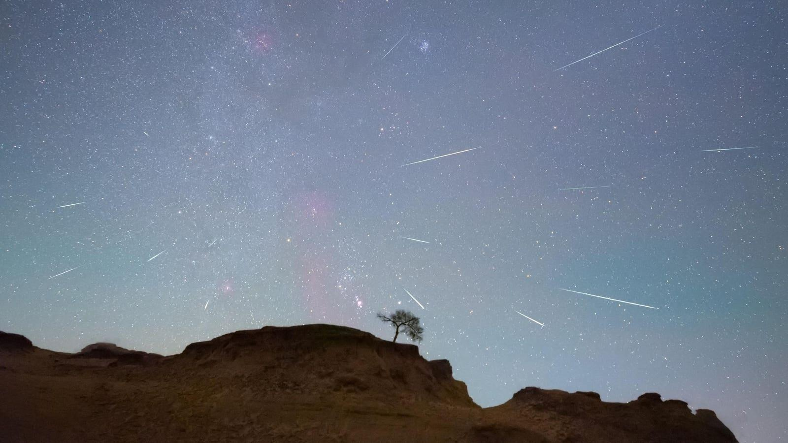

Halley’s Comet, Last Seen In 1986, Will Unleash ‘Shooting Stars This Weekend-How To Watch“Shooting stars” with their origin in the famous Halley's comet will be visible in the night sky this weekend. They will appear to emanate from the constellation Orion—just above the famous Orion’s Belt of three bright stars—hence the name Orionid meteor shower. However, the Orionids are the result of dust and debris left in the inner solar system by Halley’s comet, the most famous short-period comet—and the only comet it’s possible to see twice in one human lifetime. The Orionids Explained “Shooting stars” are caused by dust and debris from comets releasing energy as they strike Earth’s atmosphere. The Orionids are actually one of two annual meteor showers caused by Halley’s comet, the other being April’s Eta Aquariids. Last seen in the inner solar system in 1986, Halley’s comet—essentially a giant snowball of ice, rock and dust—enters the inner solar system every 75 years, slightly melting and leaving debris in its wake. That material drifts into Earth’s orbital path around the sun. That’s why we have meteor showers. The giant comet will return in 2061, with December this year seeing the halfway point in its journey, after which it will begin traveling back toward the inner solar system. The Orionids are already active, having begun on September 26, and are set to continue through November 22, though the all-important peak is on Friday/Saturday, October 20/21. When To See The Orionids Around 10-20 “shooting stars” should be visible per hour as the Orionids peak this weekend. According to the American Meteor Society, that peak will occur at midnight EDT in North America. That’s impeccable timing for the continent. Although the general advice for a meteor shower’s peak night is to observe any time after dark—in this case on Friday, October 20 through dawn on Saturday, October 21—there are another dynamics to think about. Notably the weather and the phase of the moon. Although clear skies will be required to see anything of note, the sky conditions are good for this year’s Orionids—particularly if you are prepared to stay up late. That’s because there’s a first quarter moon, which although bright enough to bleach the night sky and make it more difficult to see “shooting stars.” It will set around midnight. So the very best time to see the Orionids will likely be the early hours of Saturday, October 21. How To See The Orionids The best way to see the Orionids is to look at the night sky—and keep looking. A lawn chair can help. So can a warm jacket and frequent breaks. A dose of patience helps, as does the ability to not look at a smartphone (its white light will instantly remove any dark adaption). The best way to approach the Orionids is to treat it as a stargazing session. Go explore the constellation of Orion, which will rise high into the southeastern sky after midnight. Check out red giant star Betelgeuse—which recently underwent a mysterious “great dimming” —and see if you can find the vast Winter Loop of bright stars around Orion. Do that for an hour or so after midnight—if there’s a clear sky—and you’ll probably see “shooting stars.” However, do keep your expectations in check for the Orionids. They’re not as prolific as the Perseids, which can reach 100 “shooting stars” per hours during August’s annual Persied meteor shower. Wishing you clear skies and wide eyes. |
 |